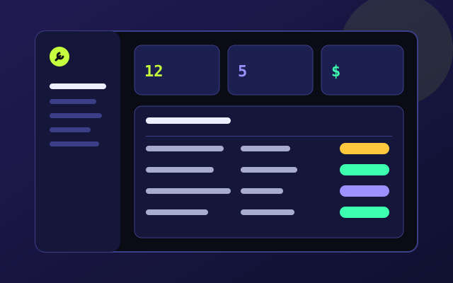
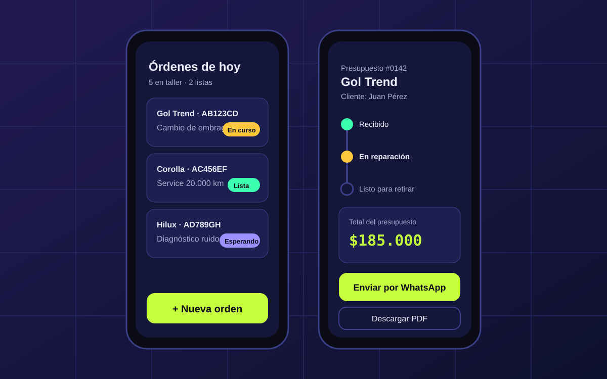

MecanicosApp: el taller, ordenado en una sola pantalla
Mi SaaS propio para talleres mecánicos: clientes, vehículos y órdenes de trabajo en un solo lugar, pensado para usarse desde el celular en medio del taller.
- Rol
- Fundador · UX/UI + desarrollo
- Tipo
- SaaS B2B
- Herramientas
- Figma, HTML, CSS, JS, Git
- Período
- 2025 — hoy

01 · Problema
Los talleres se organizan con papel y WhatsApp
En muchos talleres chicos, las órdenes se anotan en un cuaderno, los presupuestos se mandan por WhatsApp y el estado de cada auto “lo sabe el mecánico”. Cuando un cliente llama para preguntar, hay que salir a buscar la respuesta.
El desafío: que el dueño del taller sepa en segundos qué autos tiene, en qué estado está cada uno y cuánto se cobra, sin que cargar datos le quite tiempo de trabajo.
02 · Proceso
Del taller al prototipo
Observar el taller
Hablé con mecánicos de la zona sobre cómo reciben un auto, presupuestan y avisan al cliente.
Mapa del recorrido
Ingreso → diagnóstico → presupuesto → reparación → aviso → retiro.
Priorizar
Dejé para después todo lo que no ayuda a responder “¿cómo va mi auto?”.
Prototipo y feedback
Prototipo en Figma probado con mecánicos antes de programar cada módulo.
“No tengo tiempo de llenar formularios, tengo las manos llenas de grasa.”
03 · Solución
Decisiones de diseño
- Mobile primero: el mecánico usa el celular en el taller; la computadora queda para el resumen del día.
- Estados con color y texto: cada orden muestra si está esperando, en curso o lista, sin depender solo del color.
- Cargar lo mínimo: una orden nueva se crea con la patente; los datos del vehículo y del cliente se completan solos si ya existen.
- Acciones grandes: botones de ancho completo para usar con una mano y sin precisión.
- Avisar en un toque: cuando la orden pasa a “lista”, el sistema propone avisarle al cliente.

04 · Resultado
Dónde está hoy y qué aprendí
- 1dato para abrir una orden: la patente
- 3estados claros por orden
- 6etapas del recorrido mapeadas
- 100%usable desde el celular
Qué aprendí
Diseñar un producto propio me obligó a decir que no: cada función nueva tiene que justificar el tiempo que le saca al mecánico.
También aprendí que el usuario real manda: lo que en el escritorio parecía obvio, en el taller, con poca luz y las manos ocupadas, no funcionaba.